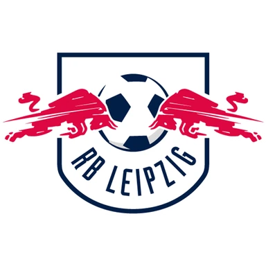

Реал Мадрид — ПСВ прогноз на матч 24 ноября
Расчёт модели
- 2,3 : 1,4ожидаемые голы
- 71 %тотал больше 2,5
- 67 %обе забьют
Цифры считает модель по данным сайта, а не эксперт. Это вероятности, а не гарантия исхода. Как считает модель · словарь терминов.
- ТурнирЛига чемпионов
Напомнить о матчеGoogle КалендарьПрогнозы дня — в TelegramСобытие в календаре телефона, напоминание за 15 минут до начала.
Коротко о матче
Главное перед игрой — серия: Реал Мадрид — 8 побед подряд. По форме разница заметная: в пяти последних матчах Реал Мадрид — 5 побед, ПСВ — 1 победа. По голам за эти пять матчей: Реал Мадрид — в среднем 3,0 забито и 0,8 пропущено, ПСВ — 0,8 и 1,0.
Обе команды играют результативно: больше 2,5 мячей набиралось в 8 из 12 их последних матчей.
По расчёту модели фаворит — Реал Мадрид: 59 % на победу. Это оценка по данным, а не обещание исхода.
Форма: последние матчи
Реал Мадрид 5 побед из 5

В4:1 В2:1
В2:1- В3:0
 В3:2
В3:2- В3:0
 ПСВ 1 победа из 4
ПСВ 1 победа из 4
- Н1:1
- П0:1
- В1:0
- П1:2
Положение в таблице
| Команда | Место | И | В | Н | П | Голы | Очки |
|---|---|---|---|---|---|---|---|
| Реал Мадрид | 2 | 4 | 4 | 0 | 0 | 13:7 | 12 |
| 24 | 4 | 1 | 1 | 2 | 3:4 | 4 |
Куда дальше
Все прогнозы дня — в TelegramПрогнозы на КХЛ, НХЛ и футбол, итоги каждое утро. Бесплатно.
Открыть каналМатериалы носят информационный характер и не гарантируют результат. Реклама букмекеров на сайте не размещается. Сайт только для совершеннолетних (18+).